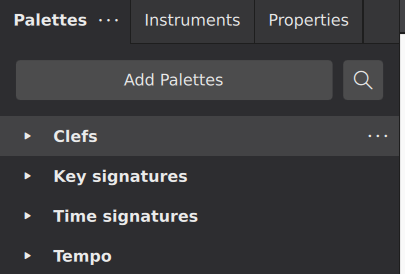
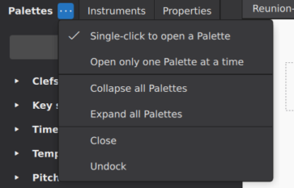
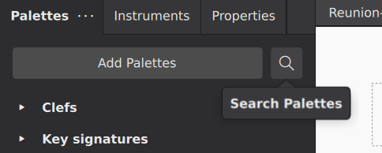
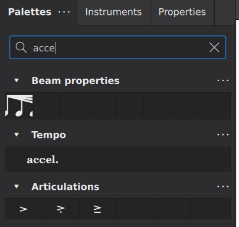
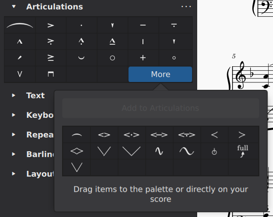
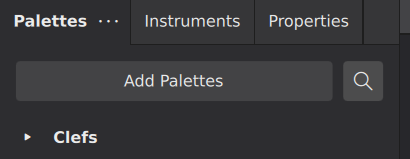
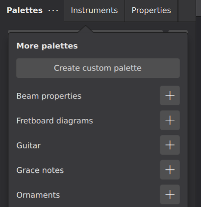
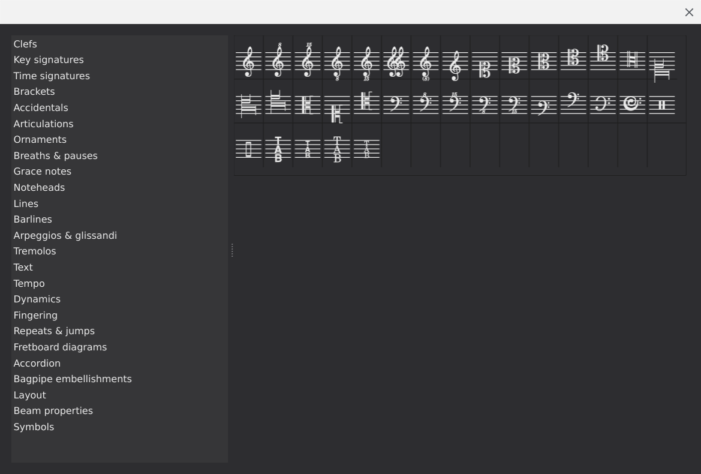

Using the palettes
Overview
The Palettes panel contains musical symbols that you can add to your score. Symbols are organized into different palettes such as Key Signatures and Articulations. A basic set of palettes is shown by default, but you can add and customize additional palettes easily.
See Palettes (Customization) to learn how to add, delete, edit and rearrange items inside any palette, as well as create and customize your own palettes.
Accessing the palettes panel
There are three tabs displayed by default at the top of the left sidebar of the main window: Palettes, Instruments, and Properties. If one of the other tabs is currently being displayed in the sidebar, click the Palettes tab to display the palettes instead.

You can open and close the Palettes panel using View→Palettes or the keyboard shortcut F9. If all of the panels in the sidebar are closed, the sidebar itself closes as well, allowing more room for the score display.
Like most other panels within MuseScore, Palettes can also be undocked to function as a separate window.
Adding palette items to your score
To add a palette item to your score, open the appropriate palette (if it's not already open) by clicking its title or the arrow icon to the left. The items in that palette will be displayed in a grid.

In general, to apply palette items to your score, you can either select the target elements in the score and then click the palette item, or drag the item from the palette to a target element. See the section on searching and navigating below for information on applying palette items via the keyboard.
Items applied to individual score elements
Many palette items—for example, articulations, dynamics, and most other text—can be applied to individual notes, rests, or other score elements. When using drag and drop, a dotted line will appear indicating which score element the palette element will attach to when the click is released.
It is usually more efficient, however, to select the target elements in your score first and then click the palette item. This is especially true if you wish to apply the same palette item to multiple score elements, since this method allows you can apply the palette item to multiple score elements at once.
To apply a palette to one or more score elements:
- Select the elements you wish to apply the palette item to (single, list, or range selection)
- Click the palette item
The palette item will normally be added to each of the selected elements. Note that with a range selected, when clicking a palette item representing text (including dynamics and tempo markings), the item will be added to the first element in the range only. System text (including tempo markings) will be applied to the top staff only; other text will be applied to the first selected element of each selected staff.
Items applied to ranges
Palette items such as hairpins, slurs, ottavas, and pedal markings are applied to a range rather than a single note or rest. The process for adding them is the same:
- Select the range of elements you wish to apply the palette item to
- Click the palette item
Items applied to full measures
Certain palette items such as barlines, time signatures, voltas, and layout breaks are normally applied to a measure as a whole—or a range of measures—instead of a specific note or rest. The process for adding these to the score is the same as for other palette items:
- Select the measure or range of measures you wish to apply the palette item to
- Click the palette item
Expanding and collapsing palettes
A palette can be opened (expanded) or closed (collapsed) individually by clicking on the title bars or the arrow icon to the left of the title. In addition, you can expand or collapse all palettes at once, or let MuseScore close palettes automatically. To access these options, click the ... button at the top of the palette window to popup the palettes menu.

- Single-click to open a palette: controls whether palettes are opened by single or double click
- Open only one palette at a time: if checked, then whenever you open a palette, any already-open palettes are automatically closed
- Collapse all palettes: immediately close all open palettes
- Expand all palettes: immediately open all palettes
Searching and navigating the palettes
You can also search and navigate the palettes using your keyboard instead of a mouse.
Search
To search for palette elements by name, use the keyboard shortcut Ctrl+F9 (Mac: Cmd+F9), or click the magnifying glass icon at the top of the Palettes panel.

This will display a search box. As you type characters into the box, MuseScore will display any matching palette items.

To close the search box, click the "X" icon.
Navigation
The palettes are completely accessible by keyboard. The search facility described above is one method you can use to start the process, but you can also focus the keyboard on the Palettes panel by using Shift+F6 to move focus to the sidebar.
Once focus is on the palette panel, the Up and Down keys will move through the various individual palettes. You can then open and close a palette by pressing Enter. To access the elements with a palette, press Right to access the palette, then Up and Down to move through the elements on the palette. Pressing Enter will apply element in the same way as clicking it.
Accessing more palette items
Some palettes also contain additional elements that are not displayed by default. To access those, click the More button at the bottom right of the palette.

Add any of these additional items to the main palette by dragging them in. For more information, see Palettes under Customization.
Adding more palettes
The palettes that are shown by default are the ones most users will need often. But MuseScore provides additional palettes that you may also find useful.
To access these extra palettes:
- Click the
Add Palettesbutton at the top of the Palettes panel.

This will display a list of palettes you can add to your Palettes panel. To add any palette, click the + button next to the palette name.

Added palettes appear at the top of the panel. To reorder them simply drag them into position.
You can also create an empty custom palette that can be filled later with your own choice of elements.
- Clicking the
Create custom palettebutton, see Palettes (Customization).
The Master palette
The Master palette is MuseScore’s repository of all musical symbols; it also provide an alternative pathway for creating custom key signatures and custom time signatures.
To display the Master palette, use the keyboard shortcut Shift+F9, or from the menu select View→Master palette.

The Master palette window is divided into categories matching the names of the default palettes (whether displayed or hidden) in the Palettes panel; in fact, the contents of each small palette are drawn from the corresponding section of the Master. The exception is the Symbols category of the Master palette which contains items not found in the Palettes panel.
Items can be applied to the score from the Master palette in the same way as from the small palettes; however, aside from applying items from the Symbols section, it is usually better to do so from the Palettes panel.
Items found in all sections of the Master palette window, except "Symbols", are functional in that they have an effect on the score: Key and Time signatures, for example. However, items from the Symbols palette are non-functional—that is, they are for display only.
See also, the chapter on Other symbols.
See also
- Palettes (Customization) for information about customizing the palettes panel.
- Other symbols for information about the Symbols palette.
- Working with images for information about how to add images to your score.